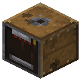

Забойный станок


Бьёт взрослую скотину в блоке перед лицом, удар за 5 с. Детёнышей и ручных не трогает. Дроп — в сундук сзади. Вал 2 л.с.
Ставь лицом к боксу: нож бьёт только в блоке прямо перед лицом, на уровне станка (ноги животного), удар за 5 с на полных оборотах. Цель — взрослая скотина: корова, свинья, овца, курица, дикая лошадь. Детёнышей, ручных (собака, объезженная лошадь) и с биркой не трогает. Мясо, кожа и кости падают в бокс — станок подбирает их сам и сдаёт в сундук сзади, иначе снизу. Бокс огради: один блок, вход из загона откорма. Детёнышей в откорм отсекает лаз для молодняка, размножает станция кормления Railcraft. Вал 2 л.с. Схема загона — docs/farm.md.
Параметры
| Эпоха | 2 — Пар и механика |
|---|---|
| Многоблок | нет |
| Привод | вал 2 л.с. |
| что делает | бьёт взрослую скотину (EntityAnimal) в боксе 1 блок перед лицом, удар за 5 с; детёнышей, ручных и с биркой не трогает; дроп подбирает и сдаёт назад/вниз (A34) |
| энергия на входе | вал 2 |
| из чего | стальные листы, втулка RC, бронзовые шестерни, железный вал IC2, доски |
Числа
| забойный станок | 2 л.с. |
|---|
Кто кормит
- вал ← Паровая машина, Паровая машина высокого давления (трансмиссия)
Кого кормит
- машины Zavod её продукт не едят
Как устроено (из кода)
Забойный станок (A34, эпоха 2, docs/farm.md): нож на шатуне от вала бьёт взрослую скотину в боксе перед лицом. Бокс - REACH клеток в линию перед лицом, на уровне машины (ноги животного), высота 2. Цель - взрослый EntityAnimal: детёнышей, ручных (EntityTameable, объезженная лошадь) и с биркой (именных) не трогает. Взмах - TICKS тиков при полных оборотах; нет цели к концу взмаха - взмах впустую, ждём следующую. Дроп (MobProperties: мясо, кожа, кости; на огне - жареное) падает в бокс - станок подбирает его в слоты 0..3 и сдаёт в инвентарь сзади, потом снизу (как лесоруб). Не влезло - лежит в боксе (воронка под полом тоже заберёт). Удар - свой DamageSource zavod_knife сквозь броню, не от игрока: опыта нет, дроп MobProperties не завязан на игрока.